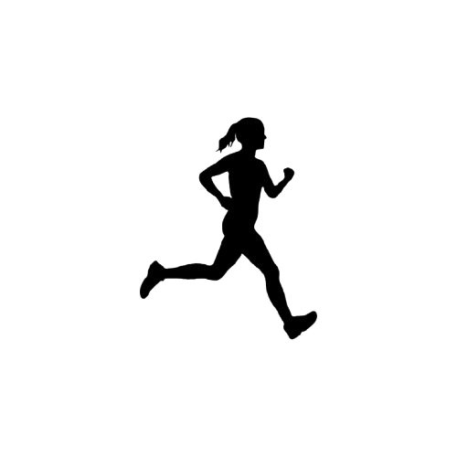
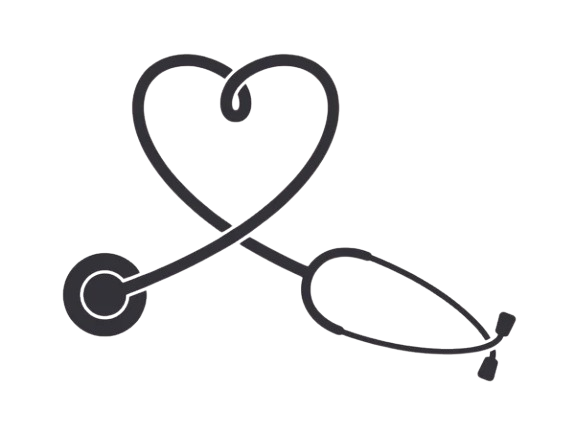

Como se prevenir

Praticando Exercícios Físicos
Exercícios ajudam a equilibrar os níveis hormonais e fortalecem o sistema imunológico. Recomenda-se pelo menos 150 minutos de atividade moderada por semana.
Alimentação saudável
O excesso de peso (especialmente a gordura abdominal após a menopausa) aumenta a produção de estrogênio, hormônio que pode estimular as células da mama.

Realizar Exames Regularmente
O Ministério da Saúde recomenda o exame a cada dois anos para mulheres entre 50 e 69 anos. Já a Sociedade Brasileira de Mastologia (SBM) recomenda a mamografia anualmente a partir dos 40 anos.